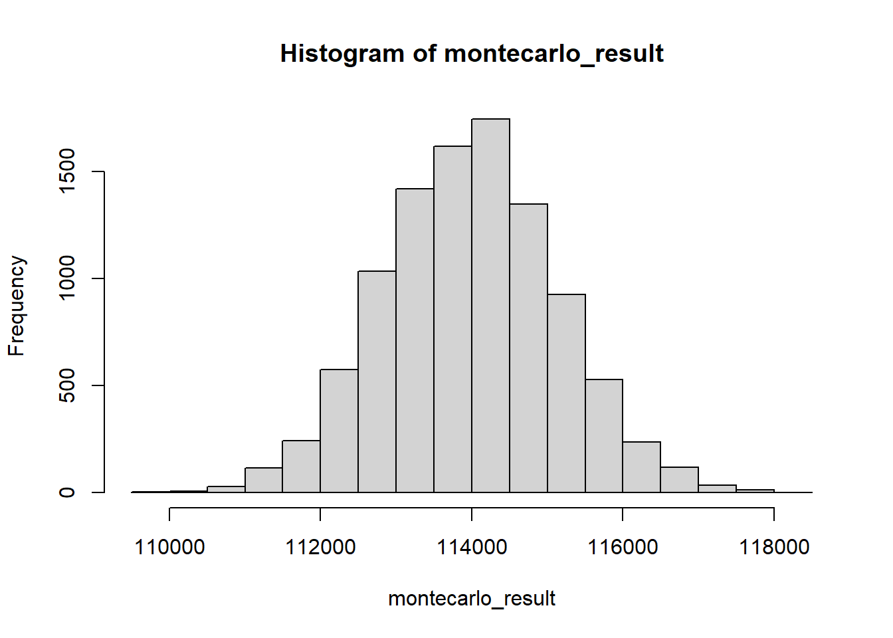
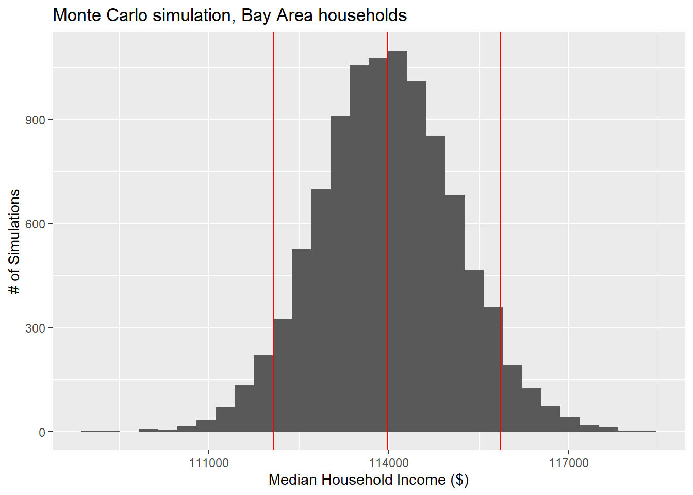

4.3 Monte Carlo simulations
It is common for the inputs to some analysis to really be “average” values for some sample or population. Sometimes, you will not have any other information other than the mean, so you’d just work through your analysis, business as usual, and end up with some kind of output based on those input means. But sometimes, you’ll know some measure of variance associated with one or more inputs. In that case, you can set up your R analyses to “propagate” those uncertainties through the analysis and know something about the variance associated with your outputs. The simplest version of this involves “brute force”, i.e. running your analysis thousands of times, each time using rnorm() to introduce some variation to your input values around their means, then measuring the variance of your thousands of different output results. This is often called a “Monte Carlo simulation”, though in some sense, even the Galton experiment from the last section was a kind of Monte Carlo simulation.
Let’s revisit the American Communities Survey as an example. If we wanted to find the median household income for the 9-County Bay Area in 2019, first without considering uncertainty, we can use censusapi as follows:
library(tidyverse)
library(censusapi)
Sys.setenv(CENSUS_KEY="c8aa67e4086b4b5ce3a8717f59faa9a28f611dab")
acs_vars_2019_1yr <-
listCensusMetadata(
name = "2019/acs/acs1",
type = "variables"
)
income_19_summary <-
getCensus(
name = "acs/acs1",
vintage = 2019,
region = "county:001,013,041,055,075,081,085,095,097",
regionin = "state:06",
vars = c("group(B19001)")
) %>%
select(!c(GEO_ID,state,NAME) & !ends_with(c("EA","MA","M"))) %>%
pivot_longer(
ends_with("E"),
names_to = "name",
values_to = "estimate"
) %>%
group_by(name) %>%
summarize(estimate = sum(estimate)) %>%
left_join(
acs_vars_2019_1yr %>%
select(name, label)
) %>%
select(-name)
income_19_summaryincome_tiers <-
data.frame(
lower_end = c(NA, 0, 10000, 15000, 20000, 25000, 30000, 35000, 40000, 45000, 50000, 60000, 75000, 100000, 125000, 150000, 200000),
width = c(NA, 10000, rep(5000, 8), 10000, 15000, rep(25000, 3), 50000, NA)
)
income_tierstotal <- income_19_summary$estimate[1]
row <- 2
cumulative <- income_19_summary$estimate[row]
proportion <- cumulative/total
while (proportion < 0.5) {
cumulative_lag <- cumulative
row <- row + 1
cumulative <- cumulative + income_19_summary$estimate[row]
proportion <- cumulative/total
}
median <-
income_tiers$lower_end[row] +
(total/2 - cumulative_lag) /
income_19_summary$estimate[row] *
income_tiers$width[row]
prettyNum(round(median), ",")## [1] "113,954"In the while loop above, a cumulative sum of households is aggregated income tier by income tier until the cumulative percent of households has breached 50%, meaning that the current row of the dataframe is the income tier that contains the median household income. From there, a linear interpolation is performed between, in this case, $100,000 and $125,000 as book-end income values and the rank order of households who are positioned at those book-end income values (in this case the 1,228,367th household and the 1,495,012th household from lowest to highest income). By assuming that each household between these households has equal increments of additional income from $100,000 to $125,000, then with some simple math we can estimate the income of the “median household”, which is the 1,377,201th household out of a total 2,754,402. The result from the above chunk is a median household income for that median household of $113,954. So to apply a Monte Carlo simulation, we need to functionalize the steps above, and then run thousands of simulations through that function. Notice, by the way, the use of prettyNum() to enable rendering of the numeric variable with a comma where we would expect it.
So to apply a Monte Carlo simulation, we need to functionalize the steps we’ve just done to the single set of inputs, and then run thousands of simulations through that function. First, let’s inspect the “margins of error” (MOE) that, till now, we’ve removed in our getCensus() pipelines. Because the American Community Survey is answered by a sample of households in the U.S. as opposed to the full population, the Census Bureau conducts additional research and analysis to produce a measure of uncertainty associated with the sample data. The margin of error reported in the Census data is, by definition, 1.645 * standard error (equates to the 90% confidence band), so we can easily convert MOEs to standard deviations by dividing MOEs by 1.645. First we need to produce the MOEs for each aggregated Bay Area income tier, just like we produced the mean household counts for each aggregated Bay Area income tier previously. Instead of summing, we take the square root of the sum of squares when adding MOEs together, as per Ch. 8 of the ACS Handbook.
income_19_summary_moe <-
getCensus(
name = "acs/acs1",
vintage = 2019,
region = "county:001,013,041,055,075,081,085,095,097",
regionin = "state:06",
vars = c("group(B19001)")
) %>%
select(!c(GEO_ID,state,NAME) & !ends_with(c("EA","MA","E"))) %>%
pivot_longer(
ends_with(c("M")),
names_to = "name",
values_to = "estimate"
) %>%
group_by(name) %>%
summarize(estimate = sqrt(sum(estimate^2)))
income_19_summary_moeAt this point, income_19_summary contains all the mean inputs that are necessary to calculate the median household income, as done previously, while income_19_summary_moe contains the MOEs of each of these inputs. The next step is to generate many copies of income_19_summary, but with the potential for each individual value to vary based on a normal distribution. We’ve used one of the mapping functions before in Chapter 2.1 and 4.1 from the purrr package within tidyverse, map_dfr(), which functions like a for loop and conveniently rbind()s the results together into a dataframe. map() would perform the same looping function but provide the output as a list of elements (this, for example, may be a more convenient format to pipe directly into another map(), since the input format should be a list; remember that a list is basically a class-agnostic combination of objects). In this case, we want to pass two different lists of inputs into the mapping function, so we use map2():
income_19_summary_montecarlo <-
map2(
income_19_summary$estimate,
income_19_summary_moe$estimate/1.645,
function(x,y) rnorm(10000, x, y)
)Use View(income_19_summary_montecarlo) in your Console to inspect the structure of this output, which will look like an object that contains a list of 17 double-bracket items within it, and each of those items is a vector of 10,000 numbers. Actually, we’d prefer to have the transposed version of this data, with 10,000 list items, each with a vector of 17 numbers, as that would better match our notion of 10,000 simulations of the 17 income tier household counts. transpose() from purrr is designed to do this to map outputs:
income_19_summary_montecarlo <-
income_19_summary_montecarlo %>%
transpose()Use View(income_19_summary_montecarlo) again in your Console to see how the data structure has changed. Now, we can pass this directly into a map(), in which our mapping function takes an individual simulation (held in the dummy variable income), unlist()s the contents of this object into a vector version of the same contents (which itself was a list of the 17 variables as a result of transpose()), and then performs a median household income calculation in exactly the same way as we did before (with just cosmetic changes given the different data structure). Note that if the function within map() has multiple steps, it will assume that the final data object created, in this case median, is the “output” desired; if not, you would use return() to specify the desired output. Also note the use of unlist() one last time at the end of the pipeline. This is there so that the list of 10,000 simulation outputs is turned into a vector of numbers that can be plotted using hist().
montecarlo_result <-
income_19_summary_montecarlo %>%
map(function(income){
income <- income %>% unlist()
total <- income[1]
row <- 2
cumulative <- income[row]
proportion <- cumulative/total
while (proportion < 0.5) {
cumulative_lag <- cumulative
row <- row + 1
cumulative <- cumulative + income[row]
proportion <- cumulative/total
}
median <-
income_tiers$lower_end[row] +
(total/2 - cumulative_lag) /
income[row] *
income_tiers$width[row]
}) %>%
unlist()
hist(montecarlo_result)
We can find statistical measures such as the mean and MOE with a 90% confidence interval of this vector of 10,000 numbers, as desired.
mean(montecarlo_result)## [1] 113949.4sd(montecarlo_result)*1.645## [1] 1910.124upper <- mean(montecarlo_result) + 1.645*sd(montecarlo_result)
lower <- mean(montecarlo_result) - 1.645*sd(montecarlo_result)
ggplot() +
geom_histogram(
aes(montecarlo_result)
) +
geom_vline(
aes(
xintercept = mean(montecarlo_result)
),
colour = "red"
) +
geom_vline(
aes(
xintercept = lower
),
colour = "red"
) +
geom_vline(
aes(
xintercept = upper
),
colour = "red"
) +
labs(
x = "Median Household Income ($)",
y = "# of Simulations",
title = "Monte Carlo simulation, Bay Area households"
)
The “MOE” derived through this Monte Carlo method should be similar to the MOE you could compute using formal mathematical functions, but now this R technique can be used, and generally can get you faster results than “working out the math”, and is especially handy for complex, nonlinear analyses where “working out the math” would be impossible.